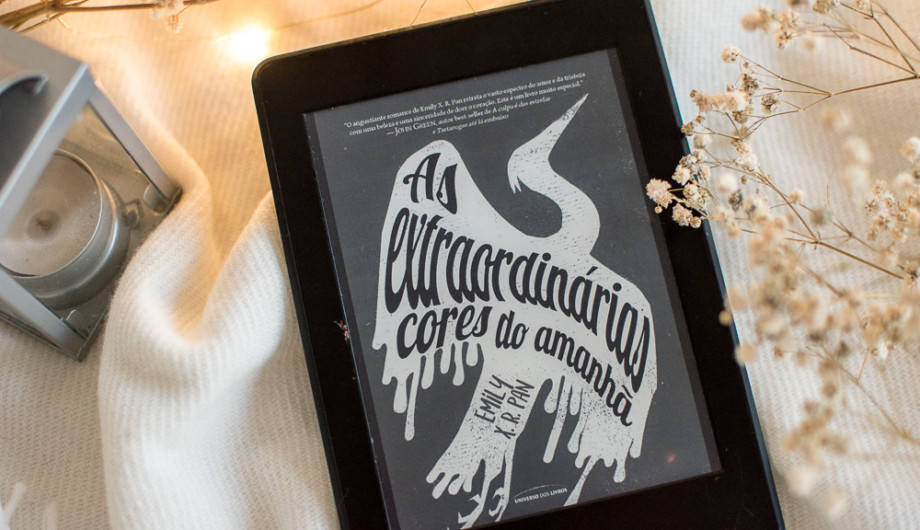

Trabalho desenvolvido para a disciplina de WEB II - Top 3 livros
Atividade realizada com Bootstrap 4.
Site feito para minha recomendação de livros com base nos meus 3 livros preferidos lidos.
![Sinopse do livro o que roubar de uma pirata: Em meio a uma guerra entre o império e os piratas, temos a segunda líder da frota do capitão Jones. Cassandra foi abandonada pela madrasta após a morte de seu pai e acabou sendo adotada pelo homem mais cruel de todos os mares. Jones, ensinou à mulher tudo o que ela precisava saber sobre a vida de um bucaneiro e isso tornoa-a alguém de pulso firme, carrasca e sem muita paciência. Depois de ser intimada pelo novo imperador, Cassandra resolve que o líder da dinastia Ping merece uma bela lição e vai até um dos reinos aliados ao império para causar uma noite de terror. Durante essa bagunça, um dos habitantes da ilha se esconde no navio pirata e quando percebe isso já está com seus dias contados. Porém, para sorte ou azar do rapaz, a pirata se diverte com os medos dele e o deixa viver por um tempo no navio, o que acaba trazendo alguns problemas para para ela, pois o cheiro do coração puro do homem irá atrair as piores criaturas e maldições do fundo dos mares.](image/oqrp.jpg)
O que roubar de uma pirata
Autora: Carol Coutinho - Brasileira

As extraordinárias cores do amanhã
Autora: Emily X.R. Pan - Estadunidense
Textos Cruéis Demais para Serem Lidos Rapidamente
Autor: Igor Pires - Brasileiro